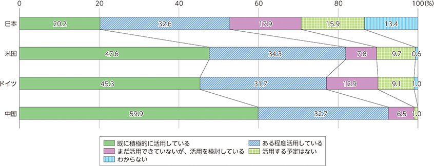

加速するデータ流通とデータ利活用
通信インフラの高度化やデジタルサービスの多様化に伴い、データ流通も進展している。2000年代に入り、SNS等の普及により、不特定多数のユーザ間での双方向のデータのやり取りが進展した。
国内の企業でパーソナルデータの活用が進展する一方、諸外国の企業と比較するとその活用状況は低調である。（図1） パーソナルデータ活用の課題・障壁として、国内では「データの収集・管理に係るコスト」や「データの管理に伴うリスクや社会的責任の大きさ」を挙げる企業が多い。

図1. 企業におけるパーソナルデータの活用状況
図1. 企業におけるパーソナルデータの活用状況